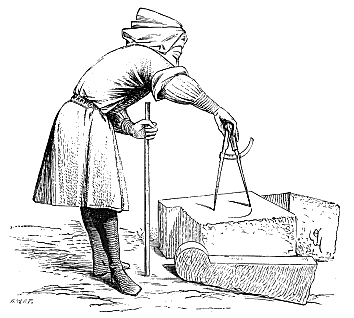
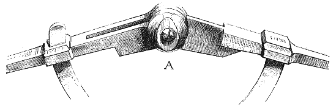
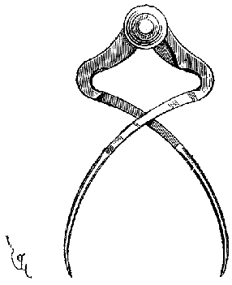

Eugène VIOLLET le DUC
Dictionnaire raisonné du mobilier.
 Figure 1 COMPAS, s. m. Cet outil, qui n'a pas besoin d'être décrit, remonte aux origines de l'humanité. Pendant le moyen âge, les maitres des oeuvres sont toujours représentés le compas à la main. L'architecte était alors ce qu'il doit toujours être, appareilleur, traceur. Ces compas sont habituellement munis entre leurs branches d'un segment de cercle, tant pour empêcher le dévers de ces branches que pour prendre des angles. Le segment de cercle étant gradué, et la distance laissée entre la tête du compas et ce segment, l'instrument devient ainsi un compas de proportion. La figure 1 montre un maitre de l'oeuvre opérant sur un lit de pierre à l'aide d'un compas de moyenne grandeur. Ces sortes de compas étaient faits de fer ; ceux de plus grande dimension étaient de bois avec pointes de fer. Nous donnons en A une tête de petit compas d'appareilleur, moitié d'exécution. Les charpentiers se servaient et se servent encore du petit compas de fer. Cet outil appartient à beaucoup d'autres corps d'états : aux menuisiers, aux tonneliers, aux charrons, aux serruriers, aux potiers, etc...

Figure 2.
 Figure 3 Le compas d'épaisseur, usité pendant le moyen âge comme encore aujourd'hui, et dont les deux branches recourbées en forme de pince se rapprochent à la pointe, servait aux tailleurs de pierre pour prendre le diamètre des cylindres, aux sculpteurs statuaires pour mettre au point. Dans les vitraux, dans les vignettes des manuscrits, on voit ces sortes de compas figurés entre les mains de ces artistes. Ces compas d'épaisseur ont habituellement la forme indiquée dans la figure 2. L'une des deux branches est une rainure pratiquée dans l'autre. Ces compas, très sensibles, dont les branches pouvaient étre arrêtées au moyen d'une vis de pression, permettaient de reporter exactement une mesure d'un lieu à un autre, sans avoir à craindre le rapprochement ou l'éloignement des deux pointes. On voit de ces compas figurés sur les bas- reliefs des stalles de la cathédrale de Poitiers, sur des bas-reliefs de la cathédrale de Chartres et dans maintes vignettes des XIIIe et XIVe siècles.